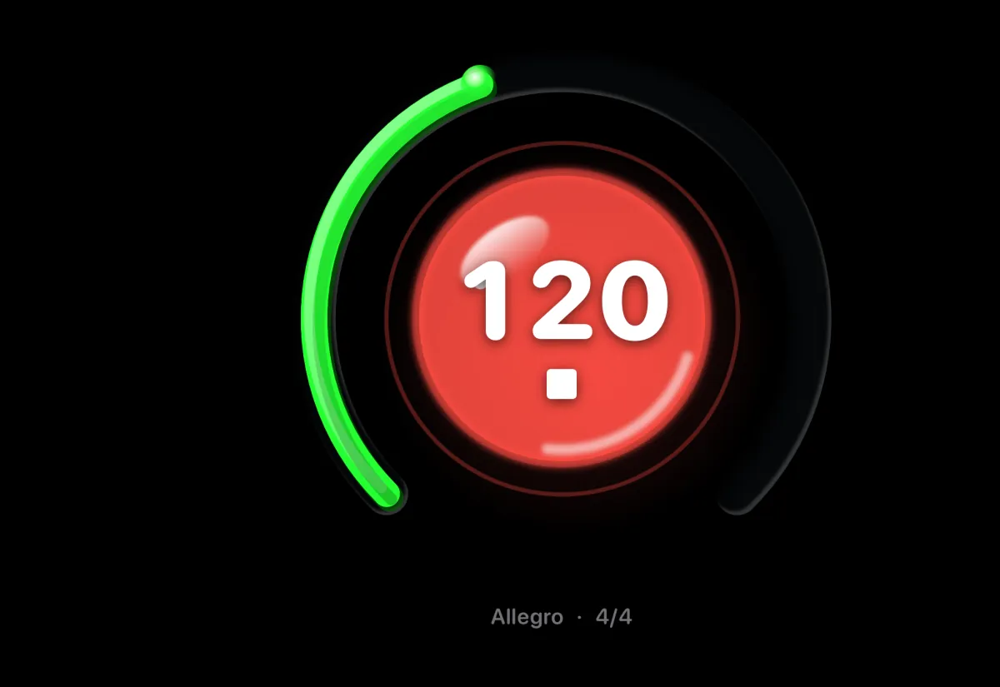

Support
Wrist Metronome is a metronome you feel as well as hear. It gives you gentle haptic taps on Apple Watch, or a clear click on Apple Watch, iPhone and iPad.
Apple Watch


- Set the tempo. Turn the Digital Crown (30 to 240 BPM), or tap the left or right side of the face to step to the previous or next preset (60, 72, 84, 90, 120, 140, 180). You can change the tempo while it plays.
- Start and stop. Tap the drop in the centre: a green ▶ means Play and a red ■ means Stop. The drop pulses on every beat.
- Choose a time signature. Tap the numerals at the top (for example 4 / 4). Pick 1 to 12 beats per bar and a quarter or eighth note, using taps or the Digital Crown. Tap outside the picker to close it. The first beat of each bar is accented.
- Settings. Tap the gear to pull down the settings:
- Beat: Haptic or Sound. Sound plays through Bluetooth headphones, or the watch speaker on models that support it.
- Haptic strength: Light, Standard or Strong. Light taps every beat up to 200 BPM, Standard up to 160 BPM and Strong up to 120 BPM. Faster than that, the watch taps every second beat (always keeping beat 1).
- Profiles from iPhone: load a tempo you saved on your iPhone.
- Display: a Graphite or Black face (Black uses slightly less battery), and the beat wave next to the clock.
- Lower your wrist. The metronome keeps going while the screen sleeps. A session runs for up to 1 hour; when it ends, the app tells you, and you can tap Play to start again.
- Complications. Add Wrist Metronome to your watch face or the Smart Stack to see your last tempo and open the app with one tap. (Playing always starts in the app.)
iPhone and iPad
- Set the tempo. Drag the dial, tap a preset, or use + / −.
- Start and stop. Tap Play (green) or Stop (red).
- Time signature. Tap the time signature button (for example 4/4) above the presets. Choose a common one (2/4, 3/4, 4/4, 5/4, 6/8, 7/8, 9/8, 12/8), or set 1 to 12 beats per bar over 4 or 8.
- Sound or vibration (iPhone). Tap the beat button next to the time signature and choose Sound, Vibrate, or Sound + Vibrate. Sound keeps playing with the screen locked; iPhone can only vibrate while Wrist Metronome is open. iPad uses sound.
- Save a profile. Tap the save button in the toolbar and give it a name. You can keep up to 100 profiles.
- Manage profiles. Open Profiles: the list button on iPhone, or the sidebar on iPad. Tap a profile to load it. Swipe it, or touch and hold, to rename or delete it.
- Appearance. The app follows the system light or dark mode, or choose one with the appearance button in the toolbar.
- Live Activity. While it plays, the tempo appears on the Lock Screen and in the Dynamic Island, with Stop and + / − buttons.
- Widgets. Add a Home Screen widget to play or stop from the Home Screen, or a Lock Screen widget to see your tempo.
Stand view
Stand view shows the metronome as a large dial, so you can stand the device up and watch the beat.

- iPad: tap Stage View in the toolbar. Tap the corner button to leave it.
- iPhone Duo, half open: open it partly, like a laptop or a book, and Stand view starts by itself, with the dial on the standing half and the controls on the other.
- iPhone Duo, closed: tap Stand View in the toolbar on the front screen. Opening the Duo closes it.
- Beat ball: choose Orbit, Liquid or Off. With Reduce Motion on, the ball isn't shown.
- While it plays, the controls fade away and the dial grows. Tap anywhere to show them for a few seconds.
Apple Watch and iPhone together
- Tempo and time signature changes are shared between the watch and iPhone, and profiles you save on iPhone appear on the watch.
- While the watch plays, iPhone shows “Playing on Apple Watch” with the tempo and the beat, and plays nothing itself. Stop, the tempo and the time signature on iPhone (and in the Live Activity) control the watch.
- Play on iPhone asks the watch to start when the watch app is open. If it isn't, iPhone offers to play on the iPhone instead. The watch can only start playing while its app is open.
- When the watch isn't playing, iPhone works on its own as usual.
Troubleshooting
The watch metronome stops when I lower my wrist
- Turn on Background App Refresh for Wrist Metronome: on the watch in Settings › General › Background App Refresh, or in the Watch app on your iPhone. The app shows a message if it is off.
- Sessions last up to 1 hour. Tap Play again to continue.
The haptic taps are weak, or I don't feel every beat
- Check that the beat is set to Haptic in the watch settings (the gear).
- Choose a stronger Haptic strength, and turn on Prominent Haptic in the watch's Settings › Sounds & Haptics.
- Above 200 BPM (Light), 160 BPM (Standard) or 120 BPM (Strong) the watch taps every second beat, because it can't tap that pattern reliably any faster. Choose a lighter strength or a slower tempo to feel every beat.
No sound on the watch
- Connect Bluetooth headphones, or use a watch that can play through its speaker.
- The watch can't use its speaker while charging; the beat then switches to haptics, and the app tells you.
- Turn up the volume.
No sound on iPhone or iPad
- Turn up the volume. Wrist Metronome plays its click even when Silent Mode is on.
- On iPhone, check that the output is Sound or Sound + Vibrate.
iPhone stops vibrating when I leave the app
- iOS only allows vibration while the app is open. Choose Sound to keep the beat going in the background.
iPhone says “Open Wrist Metronome on your watch to start”
- The watch can only start playing while its app is open. Open the app on the watch, or choose Play on iPhone.
iPhone says “Apple Watch not reachable”
- The watch may still be playing. Stop it on the watch, or bring your iPhone and watch closer together with Bluetooth on.
The metronome stopped with a message
- A phone call, Siri, or a change of headphones or speaker can interrupt the sound. Tap Play to start again.
- On the watch, a session ends after 1 hour, or when watchOS stops it. Tap Play to continue.
The tempo won't change on the watch
- Make sure the app is open and in focus, then turn the Digital Crown. If the time signature picker is open, tap outside it to close it first.
I don't see the Live Activity
- Check that Live Activities are allowed for Wrist Metronome in Settings › Wrist Metronome on your iPhone.
- If the watch starts playing while the iPhone app is in the background, the Live Activity appears the next time you open the app.
Contact
Questions, problems or ideas? Email androidoven@gmail.com. Please include your device models and iOS / watchOS versions.
- Issues and feature requests: GitHub Issues
- Privacy: Privacy Policy
- Download: Wrist Metronome on the App Store